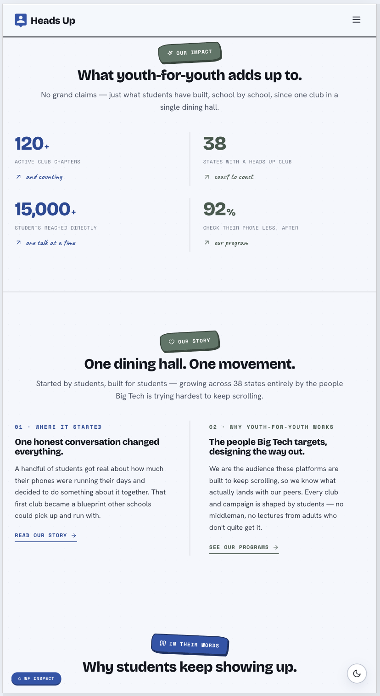
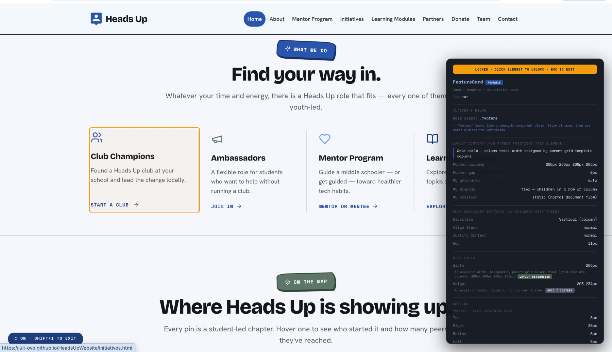
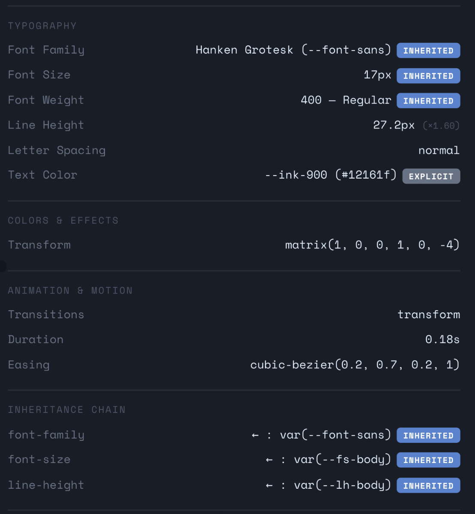
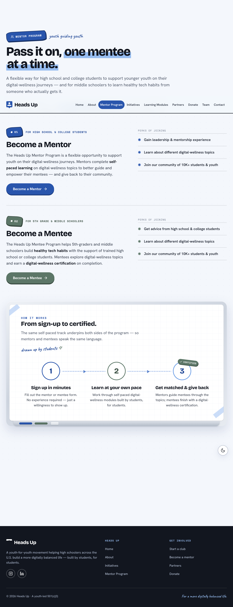
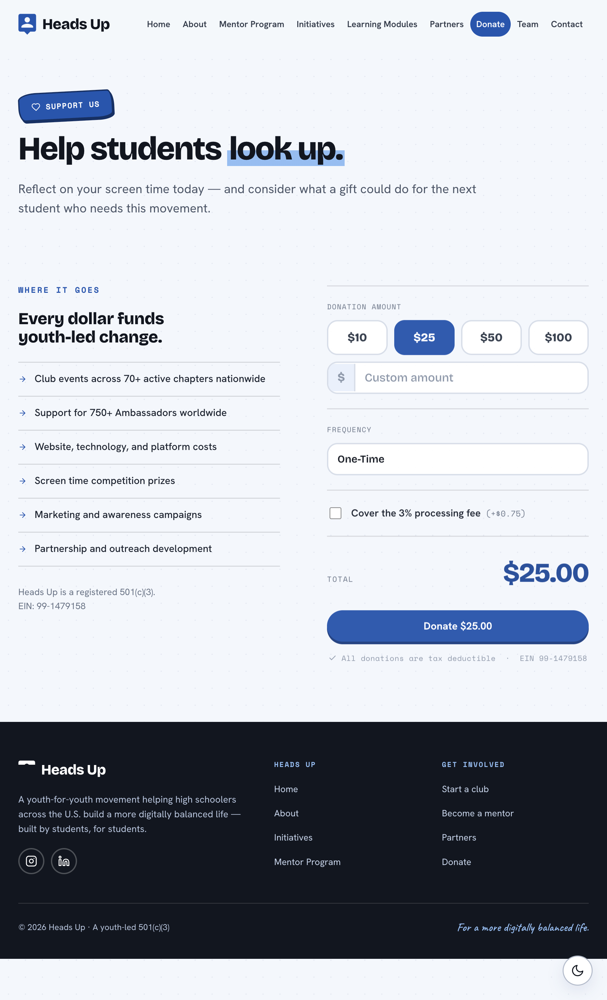
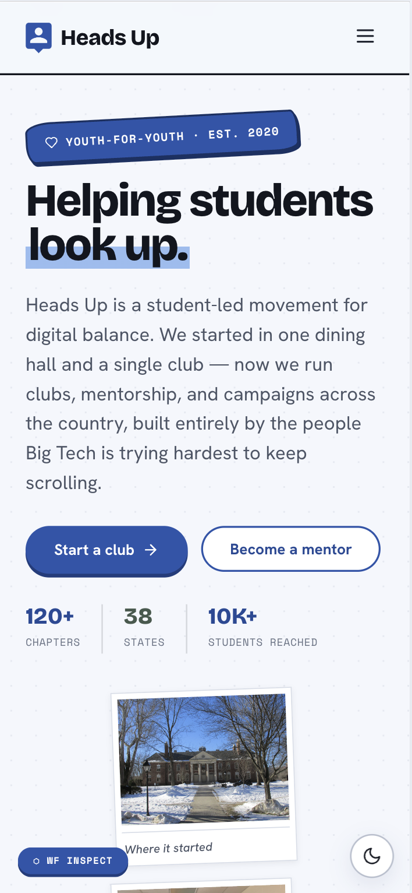
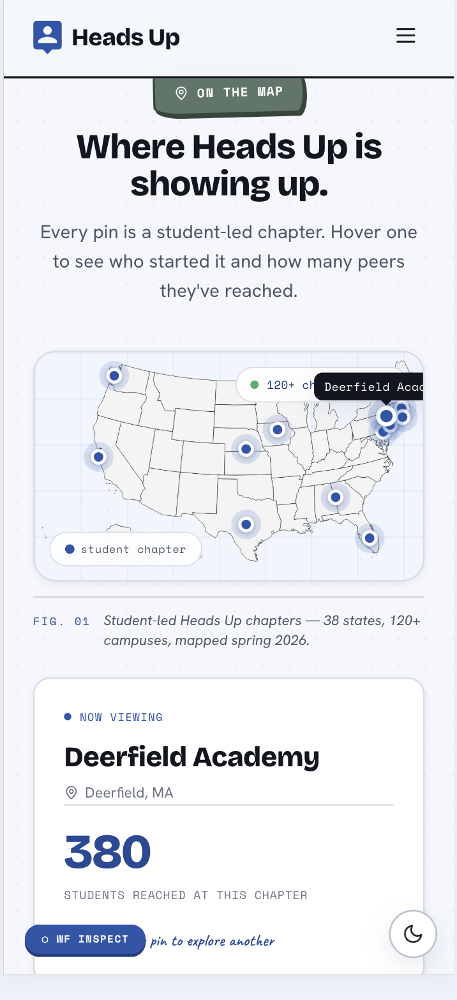

01
Chosen over two other directions
A nonprofit student organization focused on screen time and digital balance. Our tech team brought three redesign directions to the board. Mine was chosen, and I built it.
Ten weeks with two teammates and the CTO. Tasks came as goals, not specs, so I shaped the approach and implementation. I now run the tech team.
Heads Up runs student chapters, mentorship programs, and learning initiatives on healthier technology habits. Audience is middle and high school students, which drove most of the design decisions.
Organization scale — not results of this redesign.

Built an AI-assisted HTML/CSS/JS prototype so the team could review real layouts and interactions before the Webflow rebuild.
The final site had to live in Webflow so the organization could maintain it without a developer. I built a helper panel to check classes, parent layouts, inherited styles, spacing, and typography during the rebuild.


A small internal tool made the Webflow transfer faster and kept the prototype's spacing, type, and responsive behavior consistent.
The old site did not explain the organization quickly. I rebuilt the content order around nonprofit patterns: mission, scale, student stories, programs, and clear join/donate paths.
The visual system came from the logo and the student audience: round buttons, friendly type, a whiteboard motif, and a light blue field instead of a plain white page.




I sketched the outline in Figma, built reusable sections, and presented this direction with two alternatives. The board selected this version, then requested interactive sliders and content revisions.
Final site had to live in Webflow, so heavy scroll-driven animation was out — no GSAP timelines or pinning. Motion went into what Webflow handles natively: sliders, hover states, section transitions.
What to do differently: settle content before styling. Pages were structured first and copy fitted into them, which meant reworking layouts later.